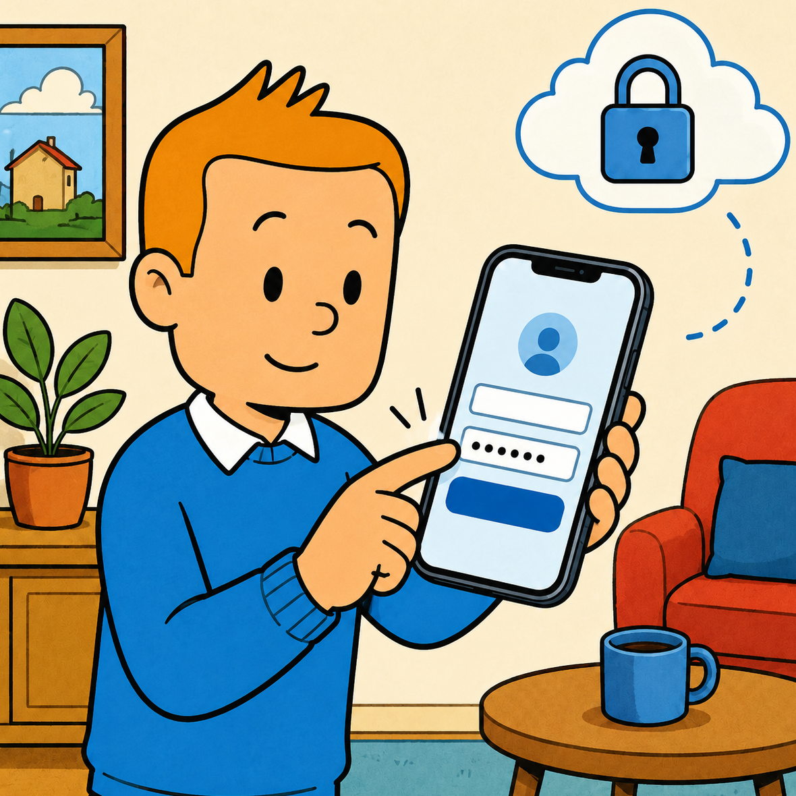
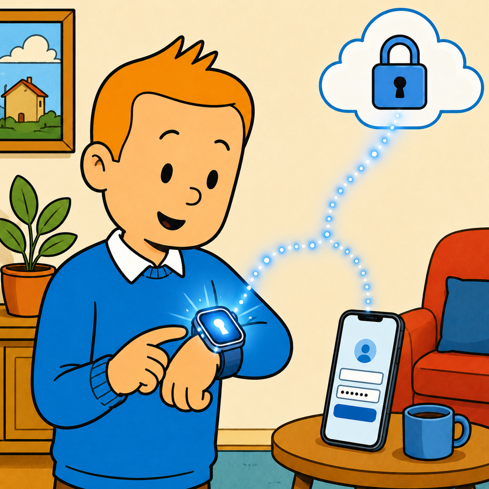
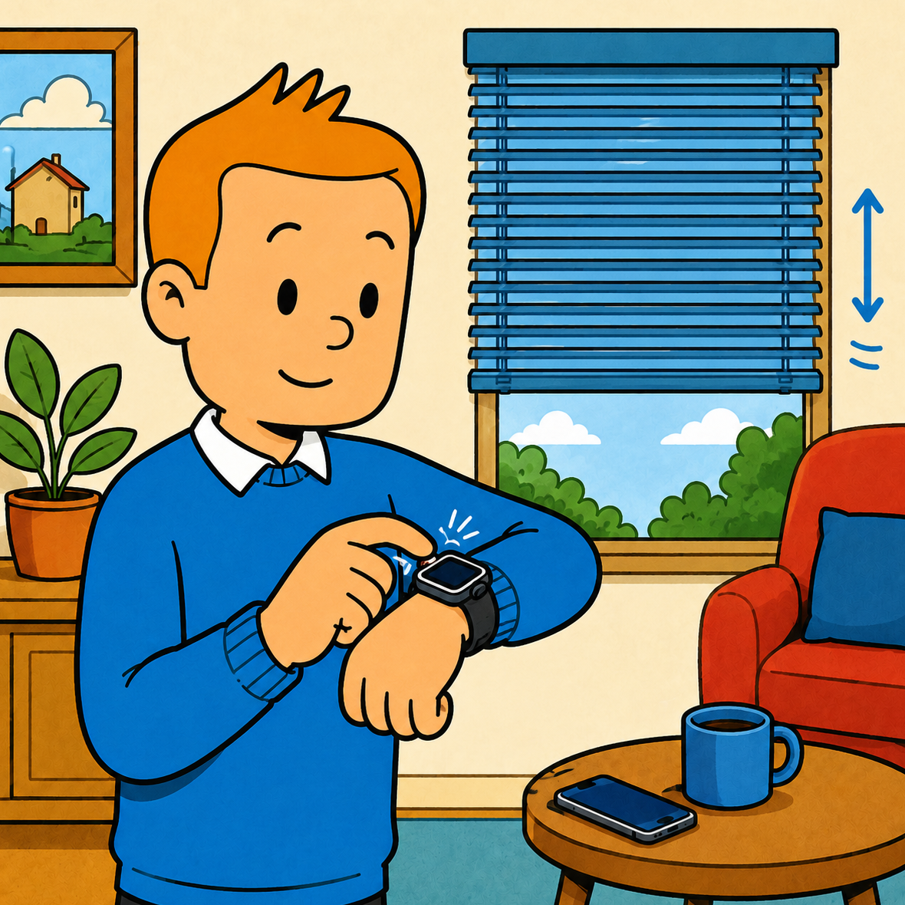

Crown = slats
Rotate the Digital Crown to tilt slats from open to fully closed. Haptic feedback at every stop.
For Apple Watch
Control Somfy exterior venetian blinds straight from Apple Watch. Tilt the slats with the Digital Crown, drag down to close. No iPhone, no hub, no bridge needed at runtime.
Built for the wrist
Rotate the Digital Crown to tilt slats from open to fully closed. Haptic feedback at every stop.
A vertical swipe sets exact closure 0–100%. Closure and tilt commit together, one command, one motor cycle.
"Morning", "Shade", "Night". Save multi-blind presets and run them with a single tap. Edit on iPhone, run from the wrist.
The watch talks to Somfy cloud directly. Leave your iPhone behind, your blinds still listen.
A whole house at a glance
List every blind on your Somfy account, themed with the colour you actually have on your house. Open the All view to crown-control every blind in the room in parallel. Stop, My, set tilt, they all answer.
Setup in under a minute

1Open Slatly on your iPhone, enter your Somfy / TaHoma credentials. They never leave your device unencrypted.

2Credentials travel through iCloud Keychain to your paired Apple Watch, usually within seconds. No extra pairing required.

3From here on, the watch talks to Somfy cloud directly over LTE or Wi-Fi. Free your hands; the blinds answer to your wrist.
Good to know
Any Somfy ExteriorVenetianBlind device registered on a Connexoon, TaHoma or Cozytouch box. If you can open/close them in the Somfy app, Slatly will see them.
Only the first time, to sign in. After credentials sync via iCloud Keychain, the Watch app runs fully standalone over LTE or Wi-Fi.
In Apple's iCloud Keychain, end-to-end encrypted under your Apple ID. The app itself never sends them to any third party, only to Somfy's official OAuth endpoint.
Yes. The Swift code, the OverkizKit library, and this website are all on GitHub. Contributions and translations are welcome.
A TestFlight build is in active polish. Public App Store release follows once the iCloud sync capability work is signed off. Join the TestFlight to get early access.
Get Slatly on your Apple Watch and never reach for the wall switch again.